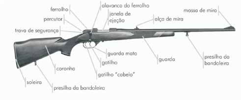
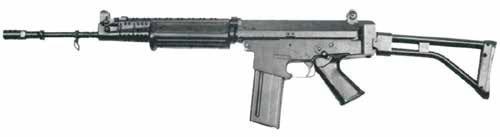
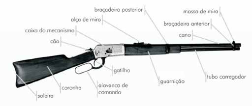
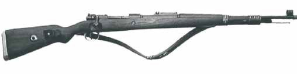
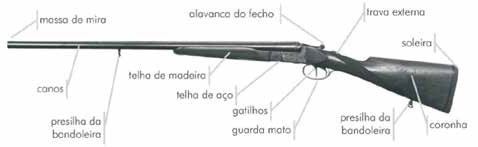
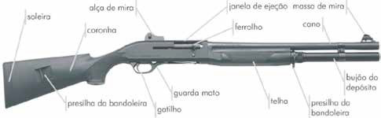
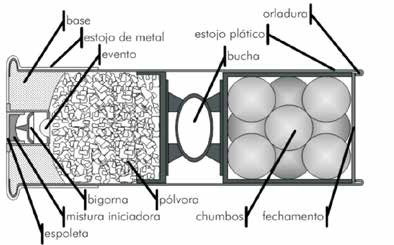
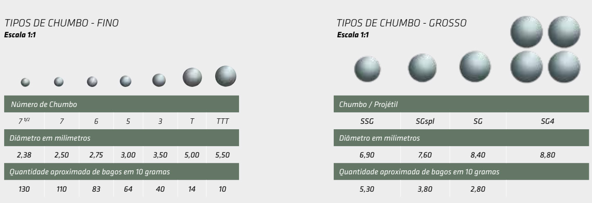
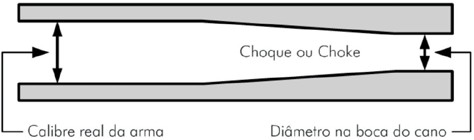
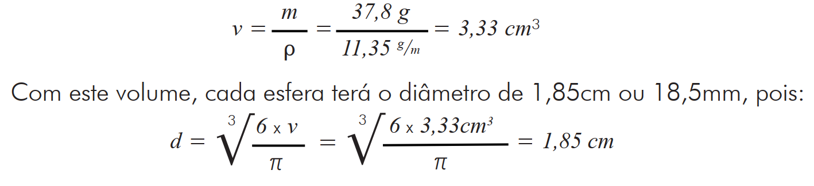

As armas longas, como o próprio termo diz, são armas com comprimento acentuado em decorrência das dimensões do cano e da coronha, não sendo consideradas armas de defesa pessoal. Seu uso requer, na maioria das vezes, a utilização de ambas as mãos e do ombro do atirador e, algumas vezes, de um quarto apoio. São destinadas à caça, esporte ou como armamento de longo alcance para categorias especiais de tiro militar ou policial. As principais categorias de armas longas utilizadas na atualidade são o rifle, o fuzil, a carabina, o mosquetão e a espingarda.
O termo rifle deriva do inglês rifled, que significa raiado ou estriado. Sua utilização se refere a armas de fogo longas, portáteis e de repetição, apresen tando canos com alma raiada com mais de vinte polegadas de comprimento. Diferentemente das carabinas, os rifles apresentam um número maior de variações com relação às suas características. Quanto ao número de canos, os rifles, de modo geral, apresentam um cano, mas existem exemplos com dois canos, nas variações sobreposta e justaposta. Quanto ao sistema de alimentação, este pode ser por meio de ferrolho ou alavanca, quando em sistemas não automáticos, ou acionado por vários meca nismos, quando em sistema semiautomático, sendo o mais utilizado o sistema por recuperação a gás. Quanto aos calibres, os rifles não possuem limitação alguma, sendo na verdade muitas vezes utilizados como plataforma de testes para munições experimentais. Abaixo segue uma figura de um rifle aferrolhado com a respectiva nomencla tura de suas partes externas.

Figura 37 – nomenclatura das peças externas do rifle (Foto: Marcelo Jost)
Os fuzis são armas de fogo longas, podendo ser semiautomáticas, automáticas ou não automáticas, apresentando canos com alma raiada, sendo utilizados em atividades militares ou, em países onde isso é permitido, na caça de grandes animais, sendo sempre de calibres potentes. Aliás, o termo fuzil tem origem latina, e os países de língua anglo-saxônica não a utilizam, classificando as armas militares simplesmente como assault-rifles (literalmente, rifles de assalto). Abaixo segue uma figura de um fuzil de assalto leve (FAL).

Figura 38 – Fuzil de assalto leve - FAL (Foto: Marcelo Jost).
Carabinas são armas de fogo longas, portáteis de repetição, com carregador tubular, geralmente colocado abaixo do cano, que tais como os rifles e fuzis apresentam cano de alma raiada, entretanto destes diferem por apresentarem cano de menor comprimento. Em alguns países o limite para o comprimento do cano de carabina é de 20” (vinte polegadas = 50,8cm) e para outros de 22½” (vinte polegadas e meia = 57,15cm)[6]. Quanto ao sistema de alimentação, as carabinas são classificadas em cara binas de alimentação pelo sistema de bomba (pump), similar às espingardas e geralmente restrito às variações do calibre .22” (.22” Short, .22” Long, .22” Long Rifle e .22” Magnum), e pelo sistema de alavanca (lever action), característico dos filmes de faroeste, no qual é utilizada munição de fogo central, incluindo calibres de alta potência, tal como a .44” Magnum. Alguns fabricantes de armas ignoram a característica de repetição para classificação de carabinas e denominam como carabina uma arma, mesmo que semiautomática, desde que com cano raiado de comprimento reduzido, como a carabina Taurus CT-40. Abaixo segue a figura de uma dessas carabinas com a respectiva nomenclatura de suas partes externas.

Figura 39 – Nomenclatura das peças externas da carabina (Foto: Marcelo Jost.)
Mosquetões são armas de fogo longas, de porte e de repetição, apresentando canos com alma raiada, geralmente com 30” (trinta polegadas = 76,2cm) de comprimento, sendo utilizados em atividades militares ou, em países onde isso é permitido, na caça de grandes animais, sendo sempre de calibres de alta energia. Diferente das armas de tiro único, o mosquetão possui um carregador, denominado depósito e localizado no interior da coronha, sendo, portanto, uma arma de repetição. A característica marcante dessas armas é a presença de um ferrolho, ou seja, um mecanismo dotado de alavanca característica e utilizado pelo atirador para extrair os estojos deflagrados da câmara de combustão, no momento do recuo do ferrolho, e para realimentar a arma, no momento em que o ferrolho é empur rado para frente, retirando cartuchos íntegros do depósito e enviando-os para a câmara de combustão. No interior do ferrolho fica alojado o pino percussor, o qual pode ser armado tanto na extração do estojo percutido como no momento da realimentação, dependendo da concepção do inventor. Abaixo segue uma figura de um mosquetão Mauser modelo 1898k.

Figura 40 – Mosquetão Mauser modelo 1898k (Foto: Marcelo Jost).
A principal característica das espingardas é a alma lisa de seus canos, ou seja, a maioria das espingardas não apresenta raiamento em seus canos, sendo exceções as armas longas com almas mistas ou um tipo específico de espingarda conhecida como Slug Gun. Deste modo, no Brasil, o termo espingarda refere-se a qualquer arma de fogo longa, portátil e com alma lisa, sendo, ainda, costume restringir a utilização do termo escopeta para espingardas de cano curto e grosso calibre. As espingardas podem ter um ou mais canos, podendo ser, quando mais de um, paralelos ou sobrepostos. Elas podem ser de retrocarga manual direta nas câmaras, especialmente em armas de caça, ou utilizar carregador, o qual pode ser tubular ou monofilar, dependendo do modelo, com capacidade variável de munição. O sistema de alimentação pode ser manual, por meio de ação de bomba (pump action), ou semiautomático. A seguir apresentam-se algumas figuras de espingardas com a respectiva nomenclatura de suas partes externas.

Figura 41 – Nomenclatura das peças externas de espingarda de caça (Foto: Marcelo
Jost).

Figura 42 – Nomenclatura das peças externas de espingarda pump (Foto: Benelli).
Quando comparados com cartuchos de munição para armas de alma raiada, os cartuchos para espingarda não apresentam grande diferença em termos de estrutura ou composição com relação às cápsulas de espoletamento ou cargas de propulsão, de modo que estas não serão discutidas. Por outro lado, a estrutura dos estojos e projéteis é bastante diferenciada, exigindo uma discussão mais detalhada. Abaixo é mostrada a estrutura básica de um cartucho de munição para espingarda, indicando suas principais partes. A diferença básica entre um cartucho para espingarda e um cartucho para arma de alma raiada é o objeto que é propelido quando a carga de propulsão é deflagrada: no primeiro é uma bucha, geralmente plástica ou de papelão, a qual impele os projéteis para fora do cano; no último o próprio projétil é impelido pela força dos gases.

Figura 43 – Esquema de um cartucho de fogo central para espingarda
(Ilustração: Marcelo Jost).
O estojo de cartuchos de espingardas é, da mesma forma que os estojos para armas com almas raiadas, o componente externo do cartucho. Diferentemente destes, entretanto, tal estojo de cartuchos é composto apenas por uma base metálica resistente, geralmente de latão, sendo o restante de seu corpo cilíndrico confeccionado de papelão ou plástico. Em seu interior, encontram-se encerrados a carga de propulsão, a bucha ou discos de papelão e os projéteis. O estojo geralmente é fechado, em sua parte frontal, com um disco de papelão ou com as próprias bordas do estojo, em um tipo especial de fechamento denominado “fechamento estrela”, ambos com o objetivo de reter os materiais no interior do estojo.
Os cartuchos para espingardas são, de modo geral, carregados com chumbos, também denominados balins, de formato esférico, mas de dimensões e massas variáveis. A denominação do tipo de projétil utilizado é geralmente baseada em números e letras, mas é bastante arbitrária e difere de país para país.

Figura 44 – Especificações de balins de chumbo comercializados em munições de caça pela CBC –
Companhia Brasileira de Cartuchos – Fonte: Catálogo de munições CBC – PORTFÓLIO 2026/2027. Por outro lado, dado o tamanho peculiar de alguns estojos, os cartuchos podem ser recarregados virtualmente com qualquer coisa que caiba dentro do estojo. Assim, são encontrados exemplos estranhos na prática: pedras, porcas, parafusos, projéteis de calibre .38” para revólver, projéteis únicos (denominados balotes) com massas de até trinta gramas, balas de borracha, etc., ficando a critério da criatividade ou necessidade do atirador para efetuar a recarga.
O calibre real em armas de alma lisa é a medida correspondente ao diâmetro interno medido na porção mediana do cano. Esta medida não deve ser tomada nem na câmara de combustão, a qual é ampliada para receber o cartucho, nem na boca do cano, devido ao fato que as armas de alma lisa podem apresentar o que se denomina choke ou choque. O choque, derivado da palavra inglesa choke, que significa estrangulamento, é uma redução do diâmetro da boca do cano de uma espingarda. O choque inicia-se como uma rampa cônica na porção interna do cano e estreita-se até atingir um estrangulamento máximo. O objetivo de tal estrangulamento é forçar o agrupamento dos balins, no momento em que são expelidos do cano, mantendo-os unidos por uma maior distância durante sua trajetória, melhorando a precisão do tiro. O choque pode ser cambiável, por meio de uma peça rosqueada na boca do cano, e é classificado em cinco tipos: a) Full (F): ou pleno; b) Improved Modified (IM): com 3/4 de choke full; c) Modified (M): com 1/2 do choke full; d) Improved Cylinder (IC): com 1/4 de choke full; e e) Cylinder (C): ou cilíndrico, sem choke. Na Europa, o choque é indicado por meio de asteriscos:

Figura 45 – Ilustração esquemática do choque em espingardas (Ilustração: Marcelo Jost).
O calibre nominal em armas de alma lisa corresponde ao número de esferas de chumbo, com diâmetro igual ao cano do calibre considerado, que poderiam ser produzidas a partir de uma libra (453,6 g) de chumbo. A razão desse critério estranho para enunciar o calibre nominal de espingardas segue mais razões históricas que a lógica ou a técnica. Vejamos um exemplo: o calibre 12, que indica que doze esferas de chumbo equivalem a uma massa de uma libra de chumbo. Assim sendo, cada esfera irá pesar 453,6 g ÷ 12 = 37,8 g e, tomando a densidade do chumbo como 11,35 g.cm-3, cada uma terá um volume de 3,33 cm³, pois:

Figura 46 – Cálculo do calibre nominal para uma arma de alma lisa de calibre 12.
Desse modo, o calibre real, que corresponde ao calibre nominal 12, é de 18,5 mm, ou seja, a parte interna mediana do cano de uma arma calibre 12 terá essa dimensão. Os outros calibres reais são calculados de modo semelhante, a partir de seus respectivos calibres nominais, e produzem os seguintes resultados:
Tabela 2 – Calibre nominal e calibre real.
| Calibre Nominal | Calibre Real (mm) |
|---|---|
| 12 | 18,5 |
| 16 | 16,2 |
| 20 | 15,9 |
| Calibre Nominal | Calibre Real (mm) |
|---|---|
| 24 | 14,3 |
| 28 | 13,0 |
| 32 | 12,2 |
| 36 | 10,2 |
Não obstante o exemplo acima, dizer que uma determinada arma possui calibre 12 não significa dizer que ela utiliza, como munição, esferas de chumbo com 18,5 mm de diâmetro, como foi discutido na seção 4.5.3 Os projéteis de munição para espingarda. Além disso, fábricas diferentes podem apresentar pequenas variações de calibre real para um mesmo calibre nominal. Um elemento de munição que guarda relação com o calibre da arma de alma lisa é a bucha, pois esta, em geral, é uma peça única de diâmetro de seção reta similar ao diâmetro do cano pela qual deverá passar (ou seja, ao calibre real). Essa informação implica que em local de crime de disparo de espingarda, em que os projéteis geralmente constituídos de balins podem, em primeira análise, ter sido disparados por espingarda de diversos calibres, a busca e coleta da bucha pode ser elemento fundamental para indicação do calibre nominal da espingarda empregada.